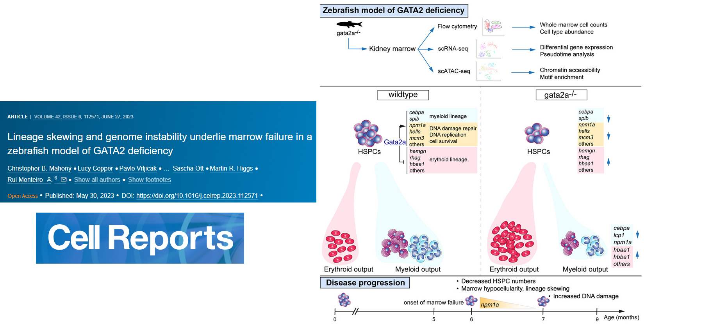
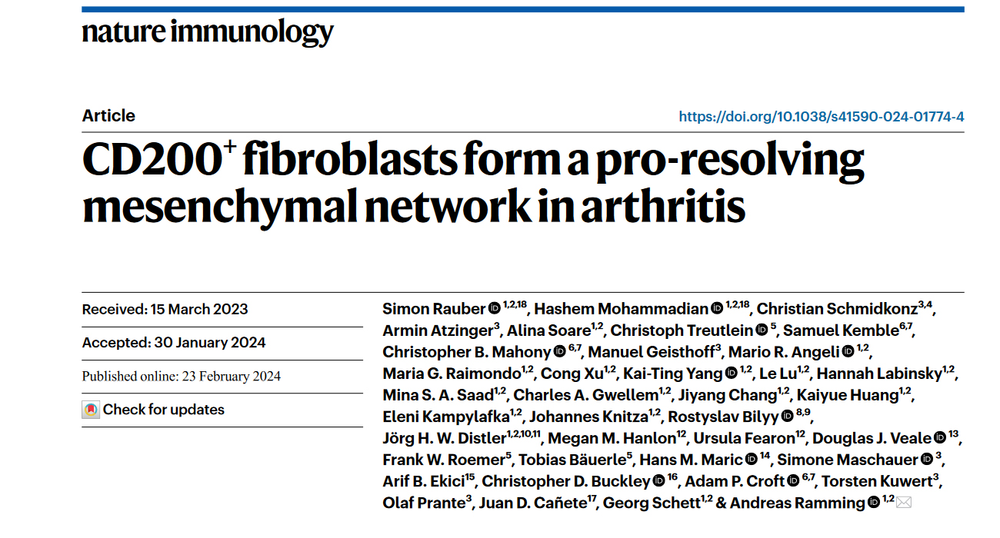
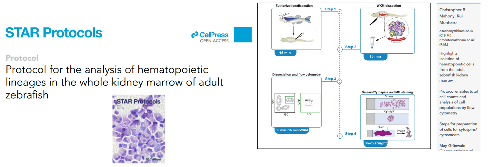

read the paper: https://www.sciencedirect.com/science/article/pii/S221112472300582X?via%3Dihub
read the code: https://github.com/chrismahony/Mahony-et-al.-CR-2023

read the paper: https://www.nature.com/articles/s41590-024-01774-4#Abs1

read the paper: https://star-protocols.cell.com/protocols/3257
Full Publication list
Rauber, S., Mohammadian, H., Schmidkonz, C. et al., CD200+ fibroblasts form a pro-resolving mesenchymal network in arthritis. Nat Immunol (2024, in press).
Mahony CB, Monteiro R, Protocol for the analysis of hematopoietic lineages in the whole kidney marrow of adult zebrafish 2024, vol. 5, issue 1, 2024, p. 102810. STAR protocols. .*Corresponding authors
Baruah P, Mahony C, Marshall J, Smith C, Monksfield P, Irving R, Dumitriu I, Buckley C, Croft A, Single cell RNA sequencing analysis of vestibular schwannoma reveals functionally distinct macrophage subsets. 2024 (In press), BJC.
Ahmed, S., Mahony, C.B., Torres, A. et al. Dual inhibition of glycolysis and glutaminolysis for synergistic therapy of rheumatoid arthritis. Arthritis Res Ther (2023).
Torres A, Kang S, Mahony CB, et al. Role of mitochondria-bound HK2 in rheumatoid arthritis fibroblast-like synoviocytes. Front Immunol. 2023 Jul 17;14:1103231.
Mahony, CB, Copper, L, Vrljicak, P, Noyvert, B, Constantinidou, C, Browne, S, Pan, Y, Palles, C, Ott, S, Higgs, M, Monteiro, R. Lineage skewing and genome instability underlie marrow failure in a zebrafish model of GATA2 deficiency. Cell Reports, 2023.
Mahony, CB, Cacialli, P, Pasche, C and Bertrand, JY, “Hapln1b, a central organizer of the extracellular matrix, modulates kit signalling to control developmental haematopoiesis”, Blood advances, 2021.*Corresponding authors
Pena, OA, Lubin, A, Rowell, J, Hoade, Y, Khokhar, N, Mahony, C, Dace, P, Umamahesan and Payen EM. Differential Requirement of Gata2a and Gata2b for Primitive and Definitive Myeloid Development in Zebrafish. Frontier in cell and dev. Biology, 2021.
Cacialli, P, Mahony, CB, Rougement-Pidoux, A, Bertrand JY. “The connexin/ifi30 pathway bridges HSCs with their niche to dampen oxidative stress”. Nat. Comms., 2021.
Gioacchino, E, Koyunlar, C, Peulen, J, de Looper, H, de Jong, M, Dobrzycki, T, Mahony, CB, Hoogenboezem. R, Bosch, D, van Strien, P, van Royen, M, French, P, Bindels, E, Monteiro, R, Gussinklo, E, Touw, I and de Pater, E, “Essential role for Gata2 in modulating lineage output from hematopoietic stem cells identified in zebrafish”, Blood adv., 2021.
Beedie, S, Harris, E, Strope, J, Mahony, CB et al., “Cereblon in in vitro angiogenesis and the anti-angiogenic activity of thalidomide”, Jul 2020, The FASEB journal.
Dobrzycki T, Mahony CB, Krecsmarik M, et al. Deletion of a conserved Gata2 enhancer impairs haemogenic endothelium programming and adult Zebrafish haematopoiesis. Commun Biol. 2020;3(1):71. Published 2020 Feb 13.
Mahony, CB, Bertrand JY, “How HSCs colonize and expand in the fetal niche of the vertebrate embryo: an evolutionary perspective”. Front. Cell Dev. Biol. - Stem Cell Research. 2019.
Ghersi JJ, Mahony CB, Bertrand JY. “bif1, a new BMP signaling inhibitor, regulates embryonic hematopoiesis in the zebrafish. Development. 2019 Mar 5. Epub.
Ferrero, G, Mahony, CB, Dupuis, E, Yvernogeau, L, Di Ruggiero, E, Traver, D, Robin, C, Bertrand, JY and Wittamer, V. “Temporally distinct populations of progenitors generate primitive and definitive microglia”, Cell reports. 2018, July 3; 24(1):130-141.
Mahony, CB, Pasche, C, Bertrand JY, “Oncostatin M and Kit-ligand control hematopoietic stem cell fate during zebrafish embryogenesis”, Stem cell rep. 2018, 10(6): 1920–1934.
Mahony, CB, McMenemy, S, Rafipay, AJ, Beedie, S, Fraga, LR, Gutschow, M, Figg, WD, Erskine, L, and Vargesson, N. “CPS49-induced neurotoxicity does not cause limb patterning anomalies in developing chicken embryos”. J Anat., 2018, Apr 232(4):568-574.
Mahony, CB, Fish RJ., Pasche, C, and Bertrand JY, “tfec controls the hematopoietic stem cell vascular niche during zebrafish embryogenesis”, Blood. 2016 ;128(10):1336-13.
Beedie SL, Mahony, CB, Walker, H, Chau CH, Vargesson, N, Figg, WD, “Shared mechanism of teratogenicity of anti-angiogenic drugs identified in the developing chicken embryo model”, Scientific reports. 2016, Jul 22;6:30038.
Beedie SL, Peer CJ, Pisle S, Gardner ER, Mahony CB, Barnett S, Ambrozak A, Gütschow M, Chau CH, Vargesson N, Figg WD, “Anticancer Properties of a Novel Class of Tetrafluorinated Thalidomide Analogues” Mol Cancer Ther. 2015, Oct;14(10):2228-37.
Mahony, CB, Erskine, L, Niven, J, Greig, NH, Figg, WD, and Vargesson, N., “Pomalidomide is nonteratogenic in chicken and zebrafish embryos and nonneurotoxic in vitro”. PNAS. 2013.
Mahony, CB. and Vargesson, N., “Molecular analysis of regulative events in the developing chick limb”. J Anat., 2013, 223(1):1-13.